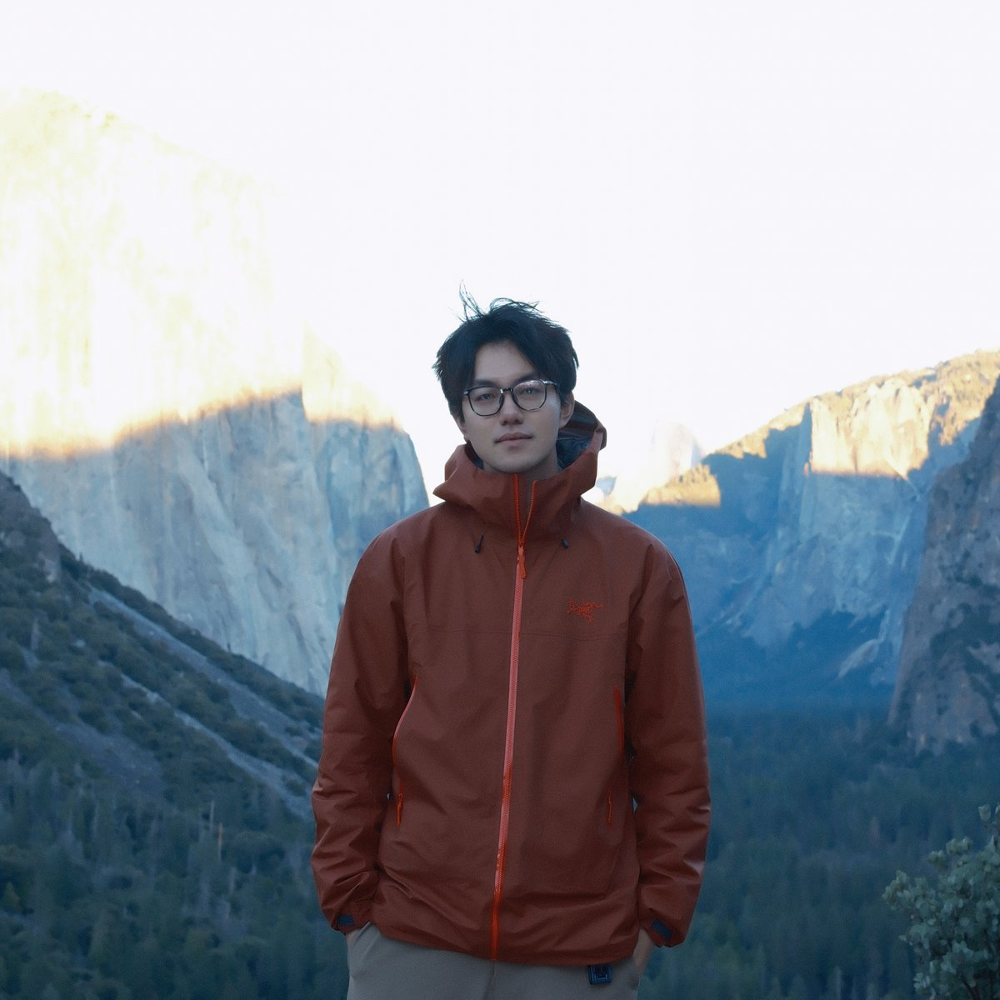

张文豪 · Ph.D. Student in Data Science
I am a second-year Ph.D. student at the School of Data Science, University of Virginia, where I am fortunate to be advised by Prof. Sheng Li. My research interests lie in vision foundation models and multimodal representation learning, with a focus on data-efficient training and fine-tuning and operator-inspired model design. I am currently working on data-efficient pathology foundation models and trustworthy evaluation of medical vision–language models.
Before joining UVA, I received my M.S. in Artificial Intelligence from Xidian University, advised by Prof. Yuwei Guo, and my B.S. in Computer Science, also from Xidian University.

I am actively looking for internship opportunities in machine learning and computer vision. If you think I could be a good fit for your team, please feel free to reach out!
Outside the lab, I play rhythm guitar in a band called CUDA — yes, named after that CUDA. The portrait above was taken at Tunnel View, Yosemite, Christmas 2025.